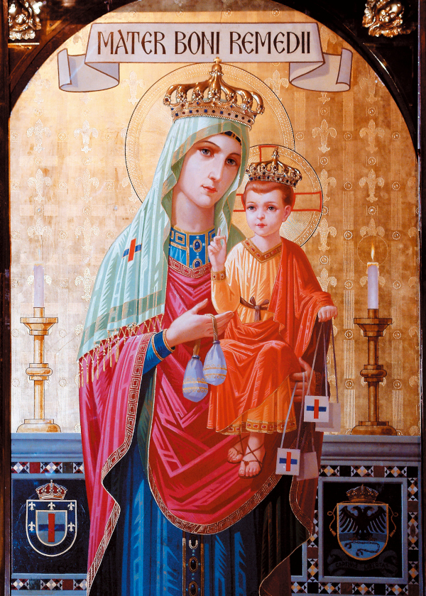

Ó Rainha do Céu e da Terra, Santíssima Virgem, nós Vos veneramos. Vós
sois a Filha bem-amada do Deus Altíssimo, a eleita Mãe do Verbo
Encarnado, a imaculada Esposa do Espírito Santo, o sagrado Vaso da
Altíssima Trindade. Ó Mãe do Divino Redentor, que, sob o título de Nossa
Senhora do Bom Remédio, vindes em ajuda de todos os que Vos invocam,
estendei a nós a vossa proteção maternal. Dependemos de Vós, ó querida
Mãe, como filhos sem ajuda e necessitados dependem de mãe terna e
cuidadosa.
Nossa Senhora do Bom Remédio, fonte de ajuda infalível, permiti-nos
retirar de vosso tesouro de graças, nos momentos de necessidade, tudo
quanto precisarmos. Tocai os corações dos pecadores, para procurarem a
reconciliação e o perdão. Confortai os aflitos e os abandonados, ajudai
aos pobres e aos que perderam a esperança, amparai os enfermos e os que
sofrem. Possam eles ser curados de corpo e alma, e fortalecidos no
espírito para suportar seus sofrimentos com paciente resignação e
fortaleza cristã.
Querida Senhora do Bom Remédio, fonte de ajuda infalível, vosso Coração
compassivo conhece o remédio para toda aflição e miséria que encontramos
na vida. Ajudai-nos, com vossas orações e intercessão, a encontrar
remédio para nossos problemas e necessidades, especialmente
(faça aqui o seu pedido).
De nossa parte, ó amorosa Mãe, nós nos comprometemos a um estilo de vida
mais intensamente cristão, a uma observância mais cuidadosa da Lei de
Deus, a sermos mais conscientes em cumprir as obrigações do nosso estado
de vida, e a esforçar-nos para sermos instrumentos de salvação neste
mundo arruinado.
Querida Senhora do Bom Remédio, nós Vos pedimos que estejais sempre
presente junto a nós e, por vossa intercessão, possamos gozar de saúde
de corpo, de paz de espírito, e crescer na Fé e no amor ao vosso Filho,
Jesus.